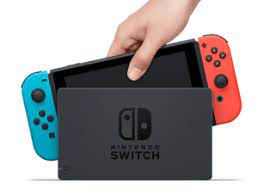

Nintendo Switch
The Nintendo Switch is a hybrid console that allows you to play games in many different modes. First, there is "TV Mode," where you can connect the console to your TV using the included dock. This way, you can enjoy your games on the big screen with others just like any other console. Next up, we have "Tabletop Mode." You can separate the Joy-Con controllers from the sides of the console and prop it up using its built-in stand. This mode is perfect for multiplayer sessions, as you can share the joy of gaming with others no matter where you are. And for those that are constantly on the move, there is "Handheld Mode." Just grab the console from its dock, attach the Joy-Con controllers to the sides, and you have a powerful handheld gaming system! Allowing you to play games on the go.